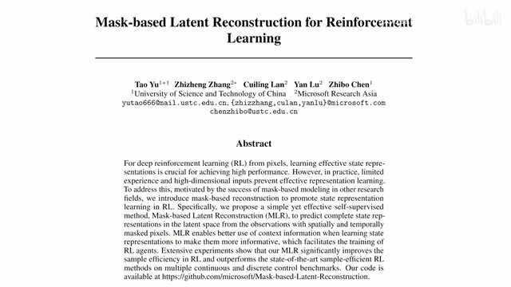
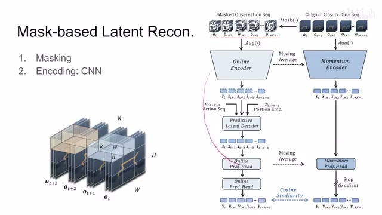
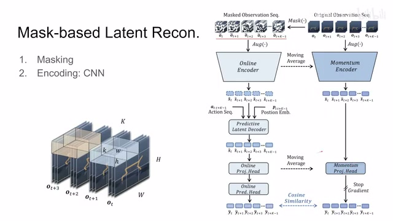
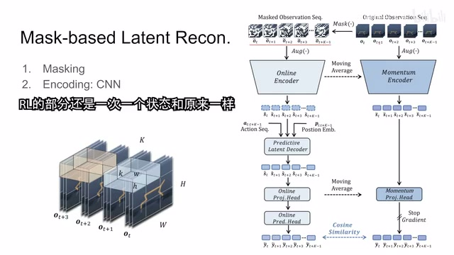
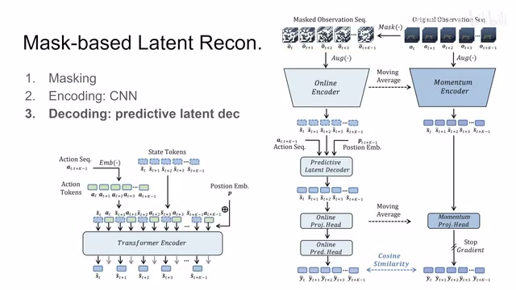
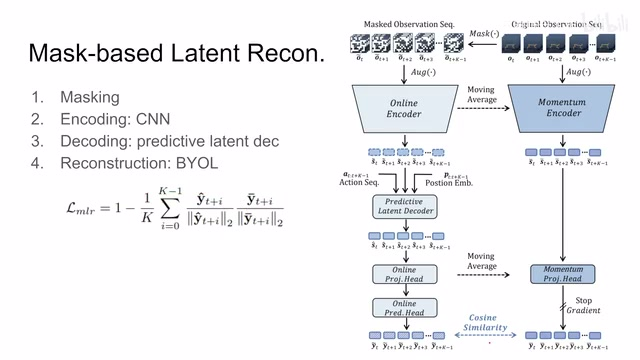
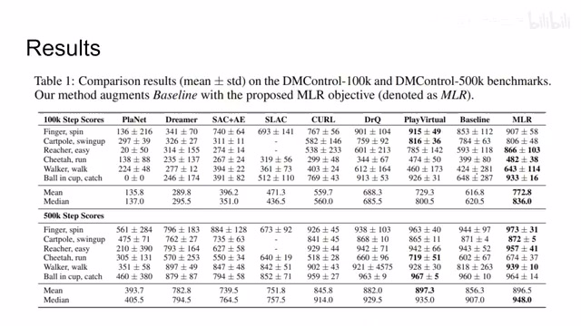
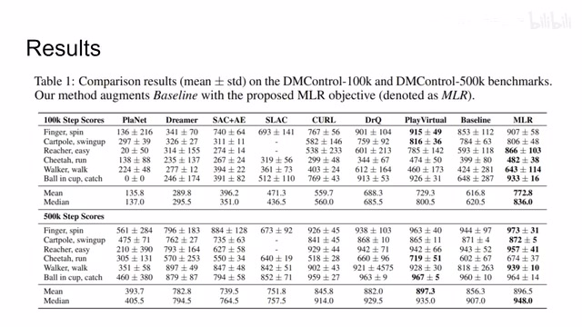

← 返回阅读库 · 原论文目录
论文讲解阅读文档 · 机器人学 · v135
Mask-based Latent Reconstruction for Reinforcement Learning[2201.12096]
视频时长 00:05:09；讲解文字 2,743 字符；提取讲解画面 16 张。按视频原顺序阅读，每段文字保留时间戳。
文字来自整段视频的自动语音转写，按自然停顿分段，并与 PPT / 论文页面 / 演示画面对齐。未将讲解压缩为摘要；术语、数字和口述公式请结合画面及原论文核对。 阅读稿已校正规范部分明确术语误识别；原始逐字稿和每处修改记录另行保留。
讲解画面为源视频截图（640×360），不是可编辑 PPT 文件。全片按每秒 2 帧扫描内容变化，逐步展开页保留；连续动画保留代表画面。清晰度受源视频限制。
下载完整资料包 · 含离线 HTML、PDF、Word、全部 PPT 画面和字幕。
原论文与材料
Mask-based Latent Reconstruction for Reinforcement Learning · 下载完整 PDF（26 页）
按时间阅读
00:00:00–00:00:25 · 画面 001

00:00:00–00:00:25 · 画面 001大家好,今天我们来快速说一篇论文 Mask-based latent reconstruction for reinforcement learning那这篇呢实际上是通过结合多种 self-supervised learning 的技巧，包括你从标题里面看到的这个 mask 还有这个 BYOL 这种 contrastive learning 的这些技巧。那通过这多种技巧呢来共同实现一个提高 online reinforcement learning 的这么一个性能的这么一个方法。那下面我们直接来看，那本文的核心的思想呢也很直接啊，一个图其实就完全可以概括了，这是它的这个 pipeline。那在进行这篇文章之前呢，我默认你已经熟悉 CURL
00:00:25–00:00:29 · 画面 002
00:00:25–00:00:29 · 画面 00200:00:29–00:00:30 · 画面 003

00:00:29–00:00:30 · 画面 00300:00:30–00:01:10 · 画面 004
00:00:30–00:01:10 · 画面 004就是那个 contrastive learning 加 reinforcement learning 这个方法。然后呢 RAD DRQ 这些东西可了解可不了解的，那么重要的是 CURL 那篇呢，虽然这个想法很美好，实际效果呢也不怎么样，出来的争议呢也很大，但是呢它能够很好的帮助我们理解这一篇那么一个快速的回顾，CURL 这个东西呢，一个 batch 里面先做 reinforcement learning，再做这个 contrastive learning，结束了。那么在本文的方法中呢，reinforcement learning 照做对吧，在 contrastive learning 的环节呢，不要单纯的做原来的那种 contrastive learning 那种方法太简单了，来看到我们右边的这个 framework，这个呢就是本文作者提出的就是在一个 batch 里面，我做完 reinforcement learning 之后的 self-supervised learning 的任务是什么，也就是或者说它的辅助的任务是什么
00:01:10–00:01:13 · 画面 005
00:01:10–00:01:13 · 画面 00500:01:13–00:01:49 · 画面 006

00:01:13–00:01:49 · 画面 006那么它的任务流程是这个样子，但是区别于 CURL 这些东西，它做 contrast learning 的时候，它是只是针对一个状态的一个时刻的状态，而本文这个方法中，你可以看到它的输入，它的输入确切来说是对 self-supervised learning 这一块的输入，它是一个 sequence，也就是很多个时序的 observation 在一起，这个是区别于之前的方法，很明显的一个不同
00:01:49–00:01:54 · 画面 007

00:01:49–00:01:54 · 画面 007然后呢，你可以看到这是一个原始的输入的序列啊，mask 之后过这个 augmentation，这个都是一样的，encoder 呢也是 cnn 的 encoder，得到这些每一个这个状态的这个 embedding 啊，这些都跟原来一样的，那包括像 mask 这一步呢，也是整个一个大的这个 tensor 对吧，化成一个个没有重叠的这个 tube 啊就可以了，那么这个呢是到了这个位置
00:01:54–00:02:09 · 画面 008
00:01:54–00:02:09 · 画面 00800:02:09–00:02:10 · 画面 009
00:02:09–00:02:10 · 画面 00900:02:10–00:02:12 · 画面 010
00:02:10–00:02:12 · 画面 010那么再往下呢，就是本文的一个很特殊的设计，那就是作者这里称为 decoding 的环节，我们知道这个在 MAE 里面呢，我们接了 decoder 之后对吧，它的目的是为了重建出一个完整的图像，因此呢，我们要把这些空的这些 mask 的这个 token 加进来，然后重建出一个完整的图像，那确切的说呢是去预测这些被 mask 的这个 patch。那么在本文中呢，作者重点强调是这个 latent decoder，因为我们之前通过这个 CNN 这个 encoder 把我们的
00:02:12–00:03:36 · 画面 011

00:02:12–00:03:36 · 画面 011这个图像变成了一个小的非常小的，也就是一个长度 50 的这么一个 state 这么一个 vector 啊，那么你再通过它去重建原始的像素啊，这个任务显然是比较困难的，而且呢我们真的有必要重建这个原始像素吗，似乎也没有那么必要。那于是呢，这里呢作者的设计呢，你可以看到首先是我们 cnn 出来这些 embedding 这些 token 那在这里，然后呢作者把我们之前的这个 sequence 中使用了这个 action它放到这个 linear layer 里面，这是一个 linear layer，然后呢也变成了一个 token。那么这些 token 呢，跟这个 state 这个 token 一起，然后加上 position 的 embedding，对吧？送到这个 transformer encoder 里面去做这个 decoding 的这么一个过程。那么 decoding 出来的这些结果呢，我只保留这个每个 state 对应的这个 token 它出来的这个 embedding。这个呢是区别于这个 mask autoencoder 的地方。那么拿到这个 state 之后呢，继续往下做，这里呢
00:03:36–00:04:05 · 画面 012
00:03:36–00:04:05 · 画面 012作者管它叫做这个 reconstruction，其实呢，它就是这个套着 BYOL 的这个 framework、BYOL 是什么，两个 representation 拿到之后对吧，你做一个 online 的 projection，把它这个 representation 投到一个 latent space 里面，然后呢，从一个支去预测另一个支的 representation 对吧，有一个 prediction，那预测出来的这个结果对吧，它们两个要相似，相似的这个 loss 呢就是长这个样子，这个是 BYOL 的东西
那么最终形成的这个 loss 呢，就是本文的这个监督信号，对吧？它的辅助的 loss 就是这个东西。你和这个 reinforcement learning 的 loss 加在一起，对吧？这个呢就是本文的这个整体的设计。所以你看到这篇文章呢，它运用了很多的技巧，这个 masking 这个 transformer 这个最后 BYOL 这个 framework，他们这些东西一起把整个流程创下来了。
00:04:05–00:04:06 · 画面 013
00:04:05–00:04:06 · 画面 01300:04:06–00:04:27 · 画面 014

00:04:06–00:04:27 · 画面 01400:04:27–00:05:09 · 画面 015

00:04:27–00:05:09 · 画面 015最终实现了一个好的结果。这个是 DeepMind Control Suite，然后后面还有 Atari 这些结果等等。感兴趣的朋友非常推荐你到原文查看，包括作者原文中也有很多的 ablation，你的 mask ratio 是多少，每一个部分的设计的取舍是怎么样的。那总的来说呢，这一篇文章啪啪啪的把前面一篇这个 that self-supervised learning really improve reinforcement learning 那一篇啪啪啪打了一通。那本文的证明，经过使用这个 masking 加上 BYOL 这些东西弄上几个 transformer 的 layer，它的性能呢其实也是可以得到改进的。然后我这次去开会的时候呢，也非常荣幸的见到第一位作者，人很好的一位大佬。那大家记得玩了命的引用好吧。那么感谢您的收看，再见。
00:05:09–00:05:09 · 画面 016

00:05:09–00:05:09 · 画面 016转写与来源说明 · 0 个自动复核提示
保留 13 个原始语音片段，0 个片段触发自动复核提示。提示仅用于定位可能的术语、重复或识别问题，不等于已确认错误。
讲解画面为源视频截图（640×360），不是可编辑 PPT 文件。全片按每秒 2 帧扫描内容变化，逐步展开页保留；连续动画保留代表画面。清晰度受源视频限制。
原视频：paper/合集_2026-10-16_机器人学/[论文速览]Mask-based Latent Reconstruction for Reinforcement Learning[2201.12096].mp4
SHA-256：09de52403f216d930109f190d4c26a702a763b2c0ce9ce21a1003acb733ca85b
全文按视频语音与画面制作。原论文可从上方链接下载；完整资料包保留全文、原始逐字稿、字幕和校对记录。